Latviešu mantojums
Raksti, zīmes un amata prasmes, ko nesam līdzi no vecvecākiem.
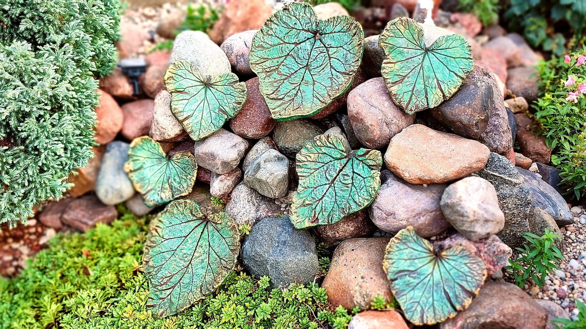
Ģimenes darbnīca · Daugavpils, Latvija
Akmens, ģipsis un krāsa — ar rokām, pēc mūsu pašu receptes. Darbi mājai un dārzam, kas paliek ģimenē.


Laipni lūdzam
Sveiki! Mēs esam Trosheen — ģimene no Daugavpils. Mūsu darbnīca atrodas pagalmā, kur pavasarī zied ceriņi un ziemā krājas sniegs pie sētas.
Katru darbu lejam, veidojam un krāsojam paši. Neviens nav tieši tāds pats kā iepriekšējais — un tieši tā tam jābūt.

Kas padara Trosheen par Trosheen
Raksti, zīmes un amata prasmes, ko nesam līdzi no vecvecākiem.
Izturīgs akmens kompozīts, ko izstrādājām paši — salizturīgs un blīvs.
Malas, faktūras un nospiedumi top ar rokām, nevis mašīnā.
Trīs paaudzes vienā darbnīcā. Bērni mācās to, ko mums mācīja vecvecāki.
Sveces traukos · Dizaina elementi · Dārza elementi


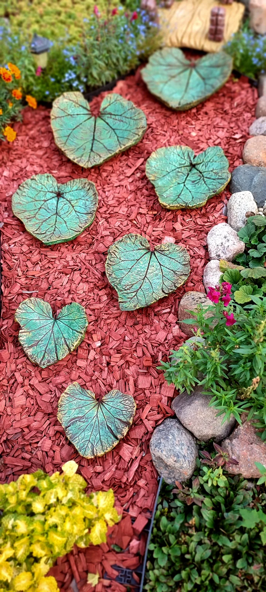


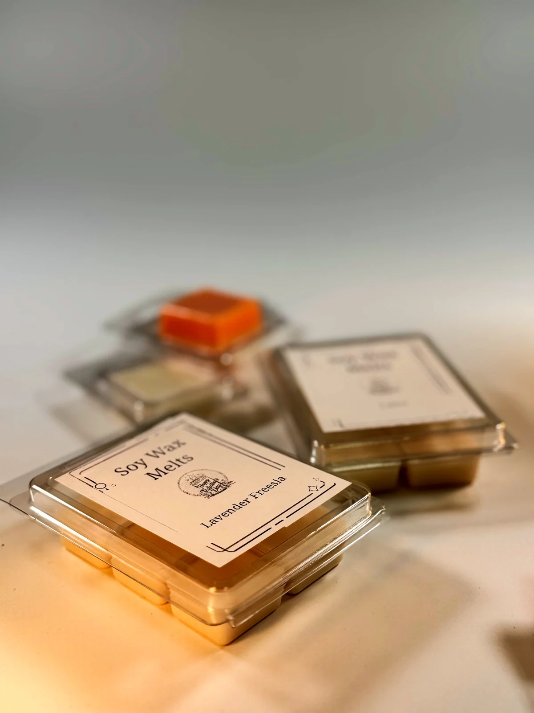
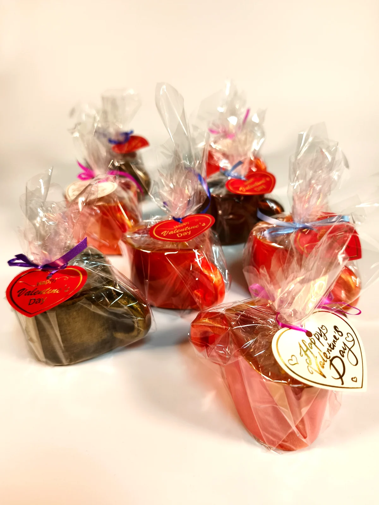
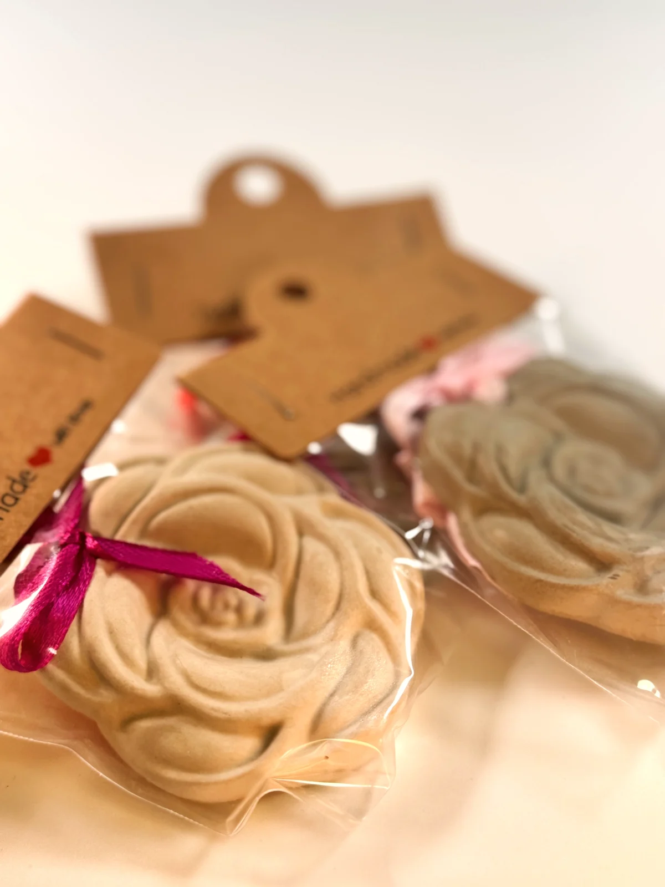
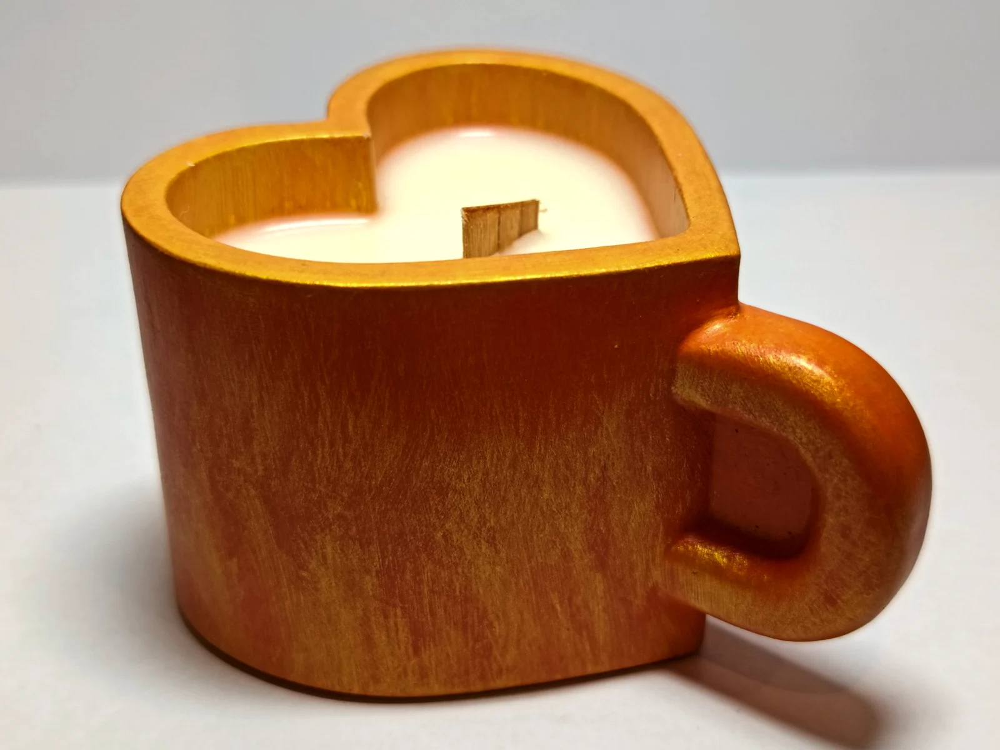
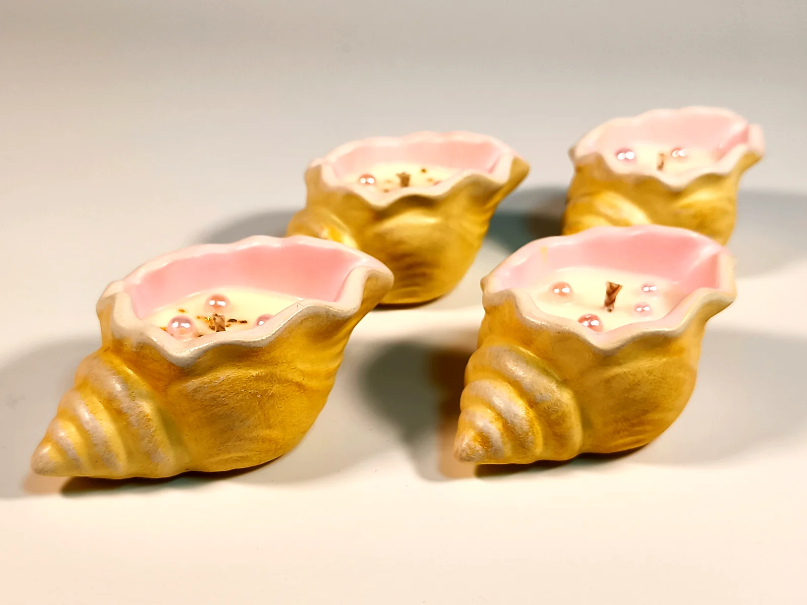
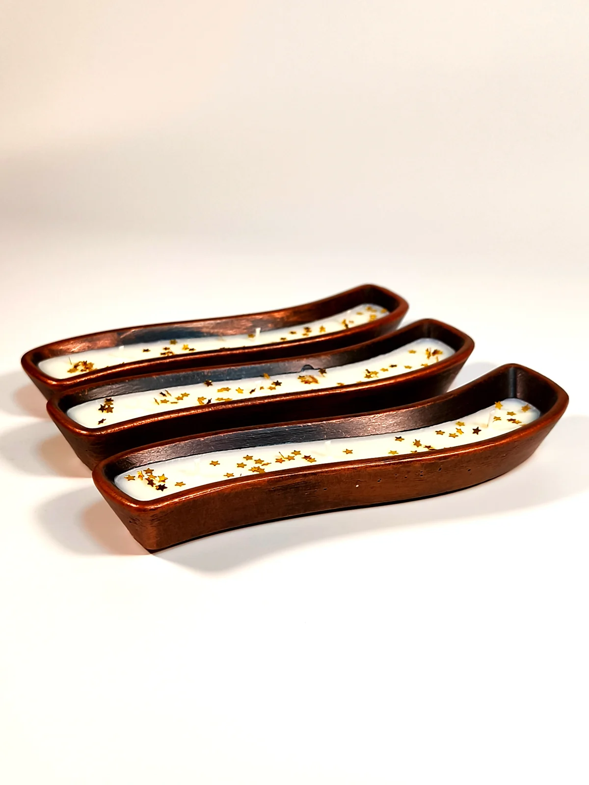
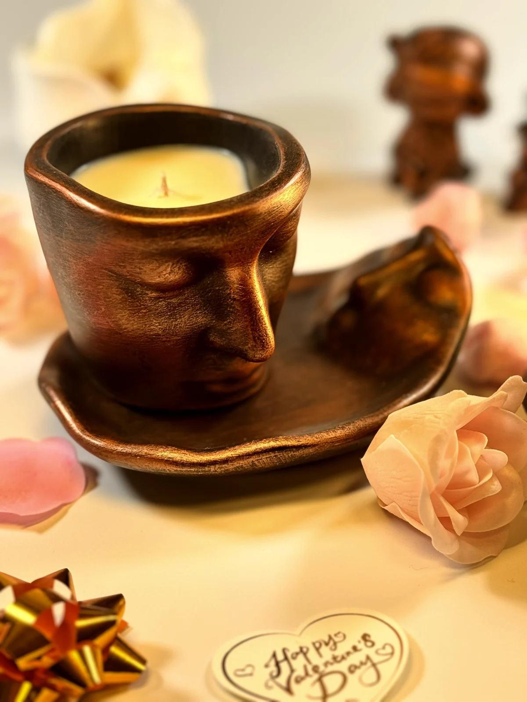
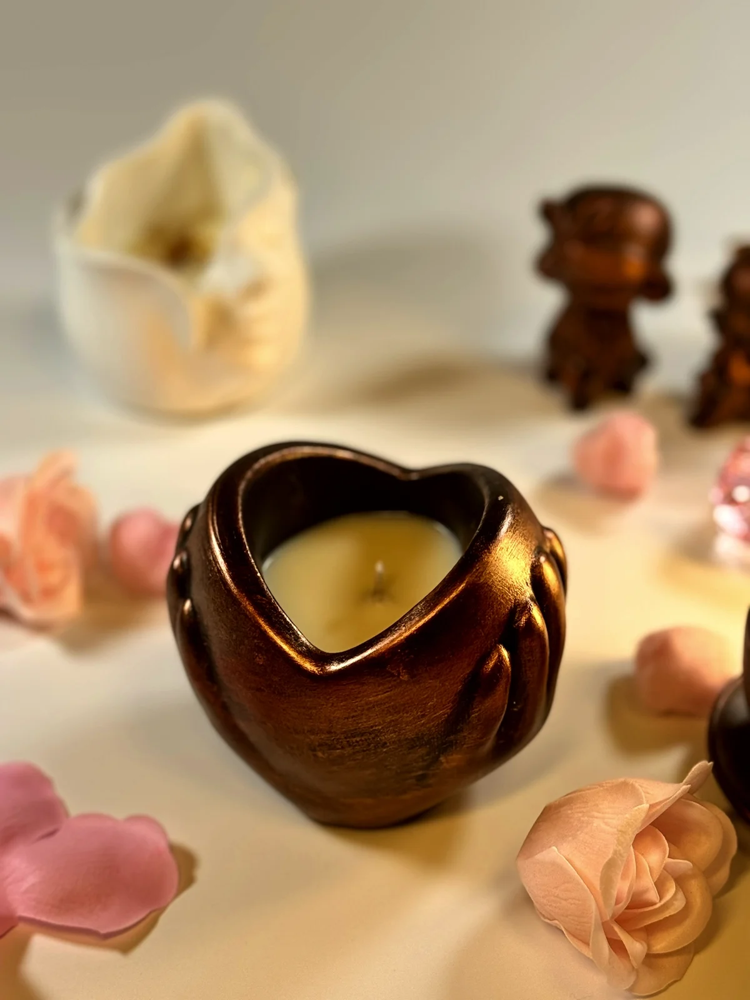
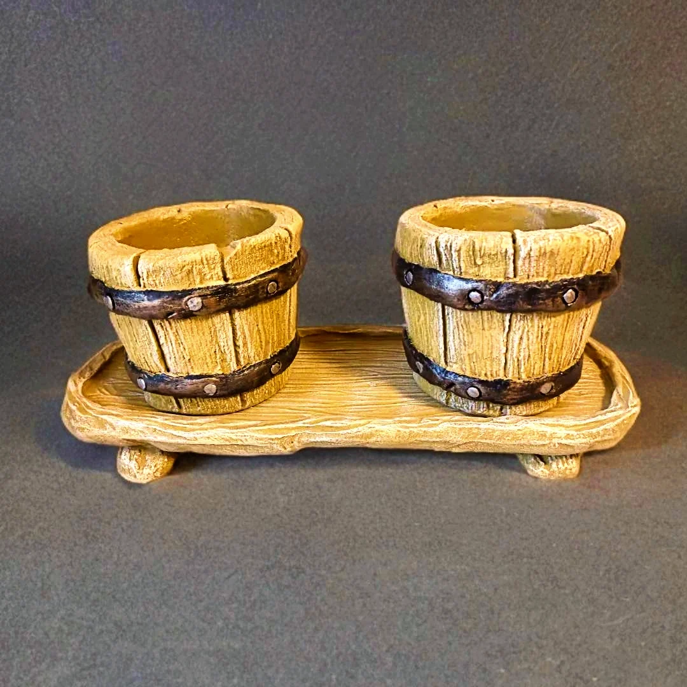
Kā top viens darbs
Seši soļi, ko katrs Trosheen darbs iziet mūsu darbnīcā. Nekas netiek steigts.
Ģipsis, baltais cements un mikrosilīcijs — mūsu pašu sastāvs, ko jaucam ar rokām katrai partijai.
Masu lejam veidnē lēni, lai neiekļūst gaiss. Lielākos darbus armējam.
Malas, faktūras un nospiedumus veidojam ar rokām, kamēr akmens vēl ir mīksts.
Darbs nesteidzīgi sacietē plauktos. Steiga to padarītu trauslu.
Minerālās krāsas un zelta detaļas klājam ar otu — katru toni atsevišķi.
Katru darbu iesaiņojam paši un pievienojam kopšanas kartīti.

Mūsu stāsts
Oļega rokas, vecvecāku prasmes un Alisijas un Nikolasa ziņkārība. Pagalms Daugavpilī, kur gadalaiki skaita laiku labāk par kalendāru.
Lasīt mūsu stāstuPielāgota darbnīca
Izvēlieties formu, krāsu un nospiedumu — un mēs to izveidosim tieši jums. Dāvanai, dārzam vai atmiņai.